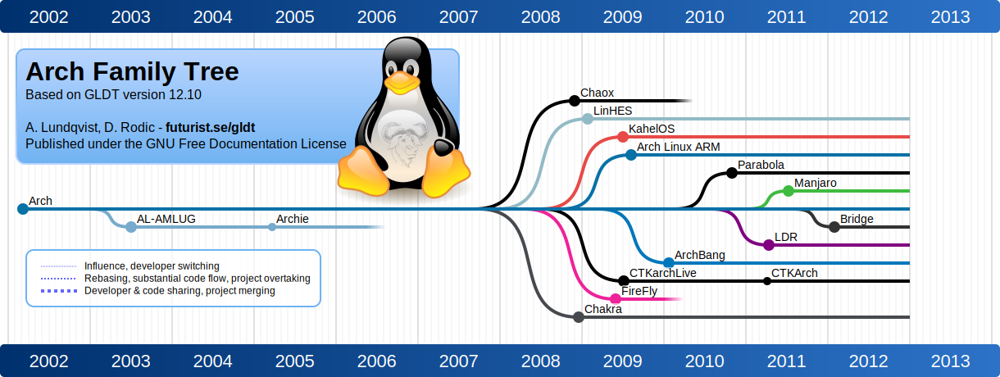
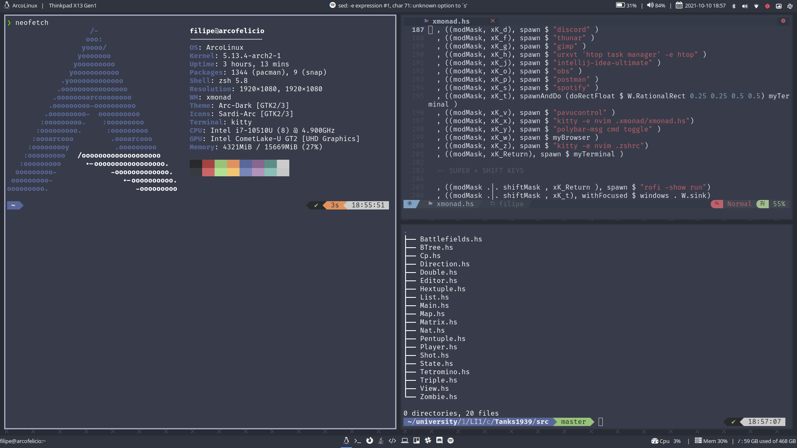
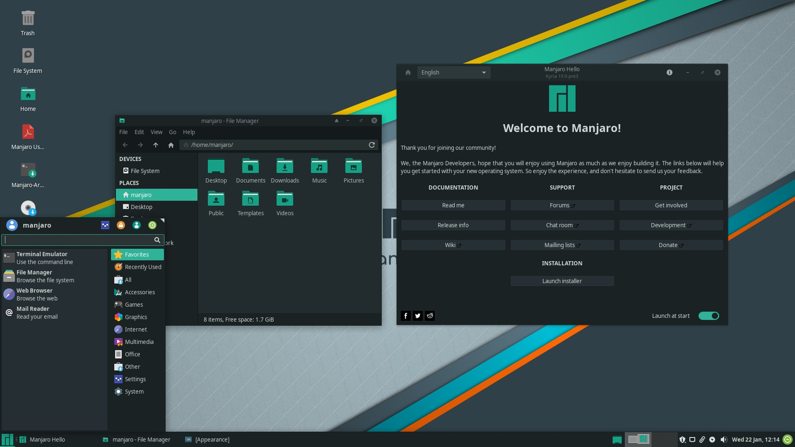

Shell Basics
Matilde Bravo
Introdução
Shell
Programa que permite a comunicação com o Sistema Operativo
e.g: Bash
Terminal
Interface que permite utilizar a Shell
e.g: Konsole
Basic Commands
File tree example
. simboliza a diretoria atual
ls - List files and directories
$ ls -la # ls -l -a
total 44
drwx------ 5 matilde matilde 4096 Nov 25 17:29 .
drwxr-xr-x 4 root root 4096 Nov 24 21:15 ..
-rw------- 1 matilde matilde 843 Nov 25 10:03 .bash_history
-rw-r--r-- 1 matilde matilde 21 Aug 9 17:27 .bash_logout
-rw-r--r-- 1 matilde matilde 57 Aug 9 17:27 .bash_profile
-rw-r--r-- 1 matilde matilde 3280 Nov 25 17:21 .bashrc
-rw-r--r-- 1 matilde matilde 4 Nov 24 21:28 ficheiro1
-rw-r--r-- 1 matilde matilde 0 Nov 24 21:16 ficheiro2
-rw-r--r-- 1 matilde matilde 0 Nov 24 21:16 ficheiro3
-rw-r--r-- 1 matilde matilde 0 Nov 24 21:16 ficheiro4
drwxr-xr-x 2 matilde matilde 4096 Nov 24 21:32 .ghc
-rw------- 1 matilde matilde 32 Nov 25 09:49 .lesshst
drwx------ 3 matilde matilde 4096 Nov 25 09:47 .local
drwxr-xr-x 3 matilde matilde 4096 Nov 25 17:22 universidademan - Manual pages
NAME
ls - list directory contents
SYNOPSIS
ls [OPTION]... [FILE]...
DESCRIPTION:
-a, --all
do not ignore entries starting with .
-l use a long listing format
-t sort by time, newest first; see --time
-s, --size
print the allocated size of each file, in blocks
-X sort alphabetically by entry extensioncd - Change directory
Go back one directory
Return to user’s home directory /home/matilde
/ represents root directory
Relative vs absolute paths
Situando-me na diretoria PF
Caminho relativo até à diretoria LI1
Caminho absoluto até à diretoria LI1
É equivalente a :
E também a :
pwd - Print Work Directory
Assumindo que fizemos cd para a diretoria PF
Creating, deleting and displaying files
mkdir - Make directory
touch - Create empty file
cat - Display files
cp - Copy
Se estivermos na nossa home, neste caso, /home/matilde
Alternativamente, podemos utilizar o path absoluto
Copiar recursivamente para a diretoria atual
mv - Move (or rename)
Se estivermos na diretoria ~
Mudar o nome de uma diretoria
rm - Remove
Para apagar uma diretoria temos que remover recursivamente
Para forçar
Redirection and Pipes
Output redirection
Apresentar texto
Adicionar texto a um ficheiro (overwrite)
Acrescentar texto a um ficheiro (append)
Input redirection
Fornecer o conteúdo de um ficheiro como input
Pipes
Conta o número de ficheiros (não escondidos)
Mostra o nome dos dois primeiros ficheiros (alfabeticamente)
Mostra todos os ficheiros com a palavra ‘ficheiro’ no nome
Mostra o número de caracteres da ultima linha do ficheiro1
Mostra o que está antes do caracter ‘-’ na string fornecida
Installing
Package Manager
- apt/apt-get (e.g: Ubuntu,PopOS)
- pacman (eg: Manjaro)
Install a package
Update Database
Upgrade
List installed packages
Web transfer
Miscellaneous
Alias
Globbing
Mostra todos os ficheiros que terminam em .hs
Copia todos os ficheiros da diretoria atual para a new_directory
Apaga todos os ficheiros começados por ‘ficheiro’
Operators
Finding
Grep
-n |
Show line number |
-v |
Select non matching lines |
-w |
Select exact matches |
-i |
Ignore case distinctions |
Useful Tips
- Navegar histórico com ↑ e ↓
- Tab completion
- CTRL-L ou
clearpara limpar o ecrã - Reverse search com CTRL-R
- !! para repetir o comando anterior (eg: sudo !!)

Linux
Just a Kernel
É a interface central entre o hardware e os processos executados por um computador. Estabelece a comunicação entre ambos, gerindo eficientemente recursos.
Linux Distro
É um sistema operativo constituído apartir de uma coleção de software baseando no kernel do Linux e num package manager e.g: Ubuntu, Debian, Arch, Manjaro, NixOS, Solus, Fedora, OpenSUSE, Gentoo, Hannah Montana Linux
Families of distros
Podes ver todas as distros em DistroWatch

Window Manager

Desktop Environment
